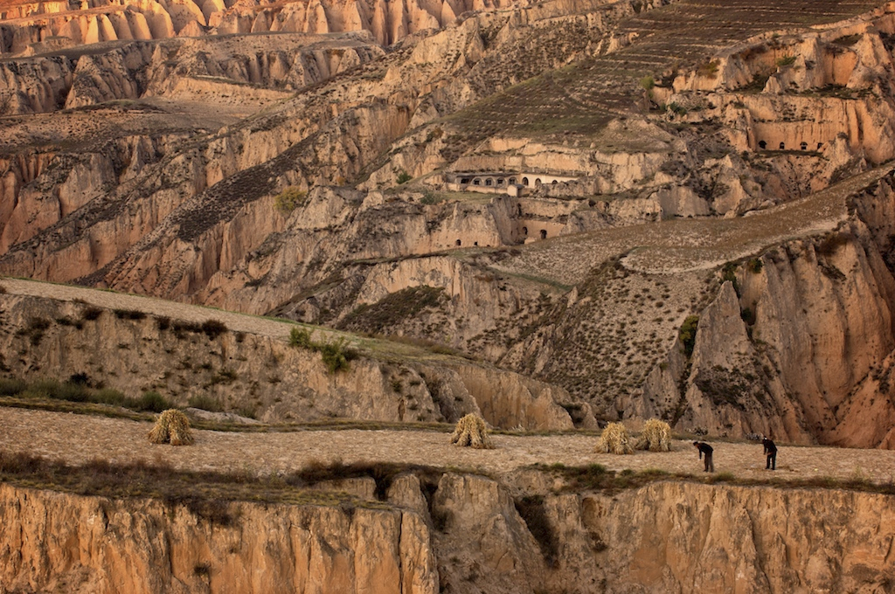

Land Degradation !
Land degradation means reduction or loss, in arid, semi-arid and dry subhumid areas, of the biological or economic productivity and
complexity of rainfed cropland, irrigated cropland or range, pasture, forest and woodlands resulting from land uses or from a process or
combination of processes, including processes arising from human activities and habitation patterns.
Impacts of Land Degradation !
As of today, almost a quarter of the world’s total land area has been degraded. This creates enormous problems not only for the billions
of people who directly depend on agriculture, but it has far-reaching impacts affecting every single person on this planet today. These
impacts include food shortages, volatility and increases in food prices caused by declines in the productivity of croplands; heightened
impacts of climate change globally caused by the release of carbon and nitrous oxide from degrading land; and the threat of social
instability from the forced migration that will result.
If current trends continue, 95% of the Earth’s land areas could become degraded within the next 30 years.
Some heavily affected regions are -

Located in northern China, this plateau has highly erodible soil that suffers from severe soil erosion due to over-farming
and deforestation. Although large-scale soil conservation efforts have been implemented here, land degradation remains a major
concern.
The Midwestern United States experiences significant land degradation, particularly in areas that are intensively used for
agriculture. Key issues in this region include soil erosion, nutrient depletion, and pollution, largely driven by intensive
farming practices and climate impacts.
Widespread soil erosion,deforestation , and desertification are severe due to unsustainable agricultural practices, overgrazing,
and climate change. The Sahel region, in particular, faces major degradation.
Brazil, Bolivia and Peru face deforestation and soil erosion due to large-scale agriculture, logging, and mining activities in the
Amazon, significantly impacting biodiversity.
Thar Desert region is heavily affected by land degradation, primarily due to desertification, overgrazing, and water scarcity. The
semi-arid conditions and high temperatures make the soil prone to erosion, while unsustainable agricultural practices and overuse of
groundwater worsen the situation.
Australian rangelands are significantly affected by land degradation. Covering around 80% of the continent, these vast
landscapes, which include arid and semi-arid regions, grasslands, savannas, and woodlands, are highly susceptible to
degradation